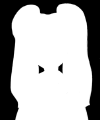
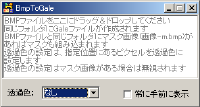

チュートリアル
| 素材ファイルの用意 |
《重要》 LiveMakerProのみ |
|  | BMPファイルを用意します。通常、キャラクタの場合は主線が綺麗に出るようにマスク画像を合成します。マスク画像はグレイスケール画像で、白い所ほど本体がはっきりと表示され、黒い所ほど本体が透けて表示されます。 |
|
chara1.bmp |
chara1-m.bmp |
|  | ←--------- |
|
コンバートが成功すると、BMPファイルと同じフォルダにGaleファイルが作成されます(上記で言うと chara1.gal )。